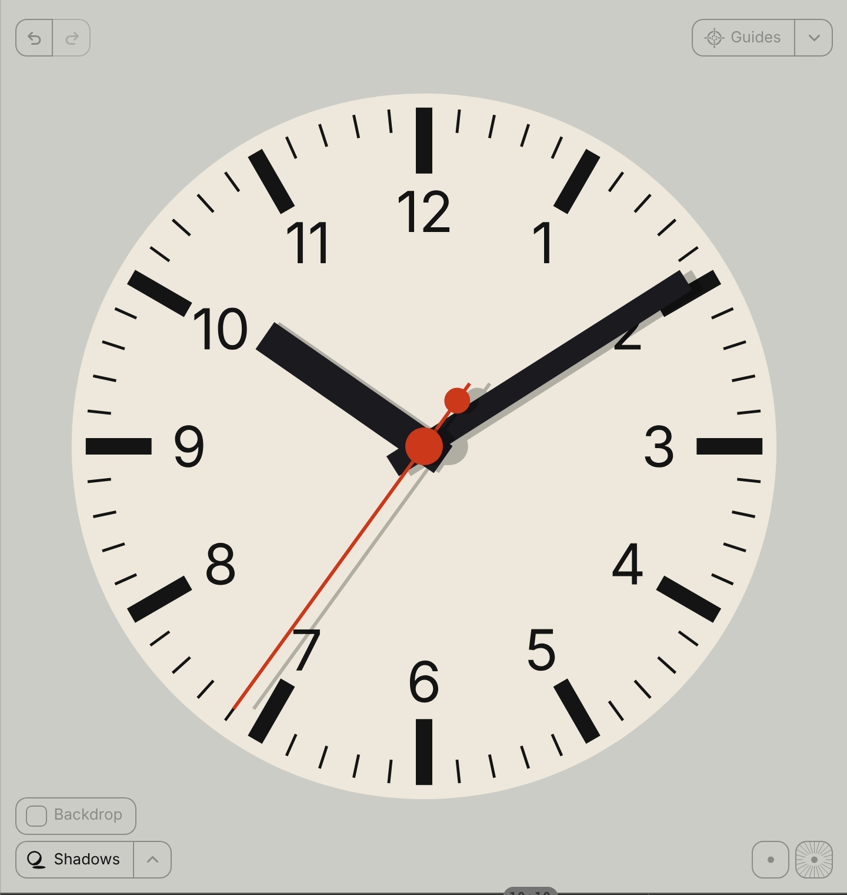
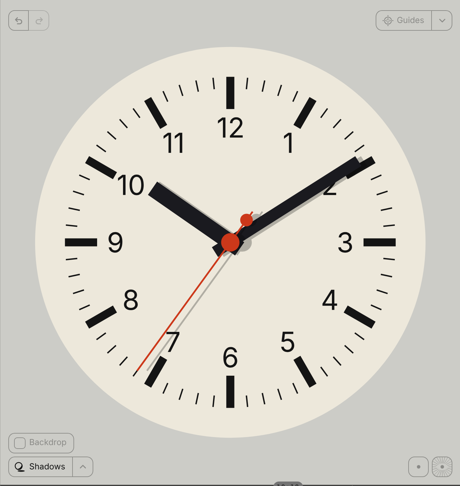
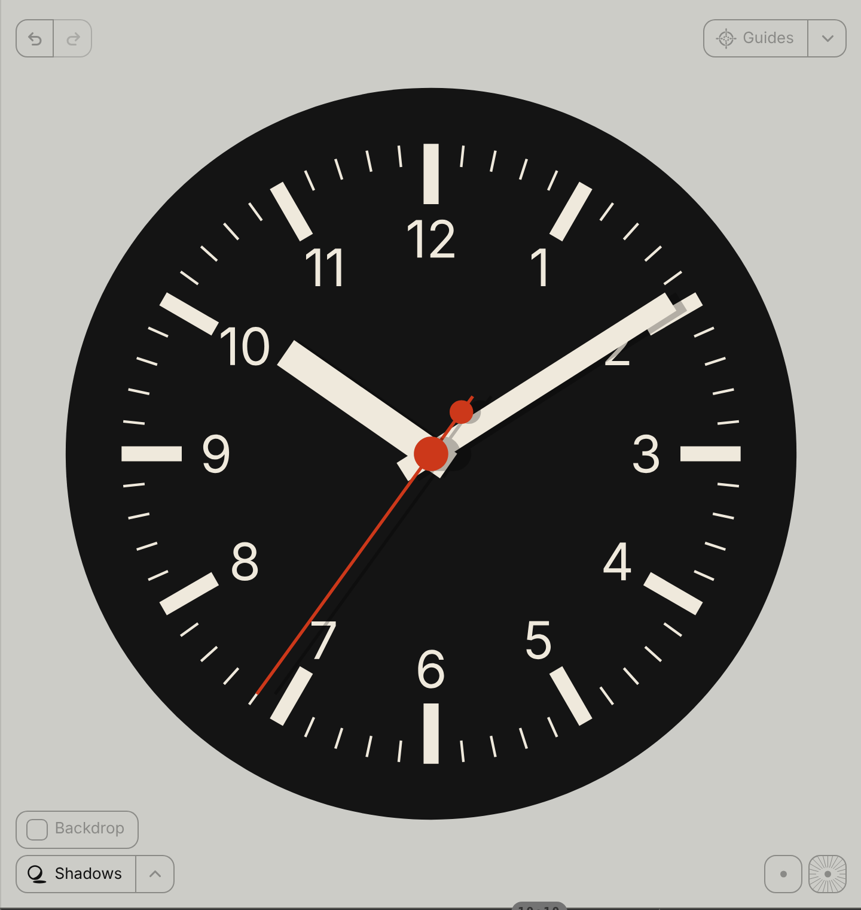
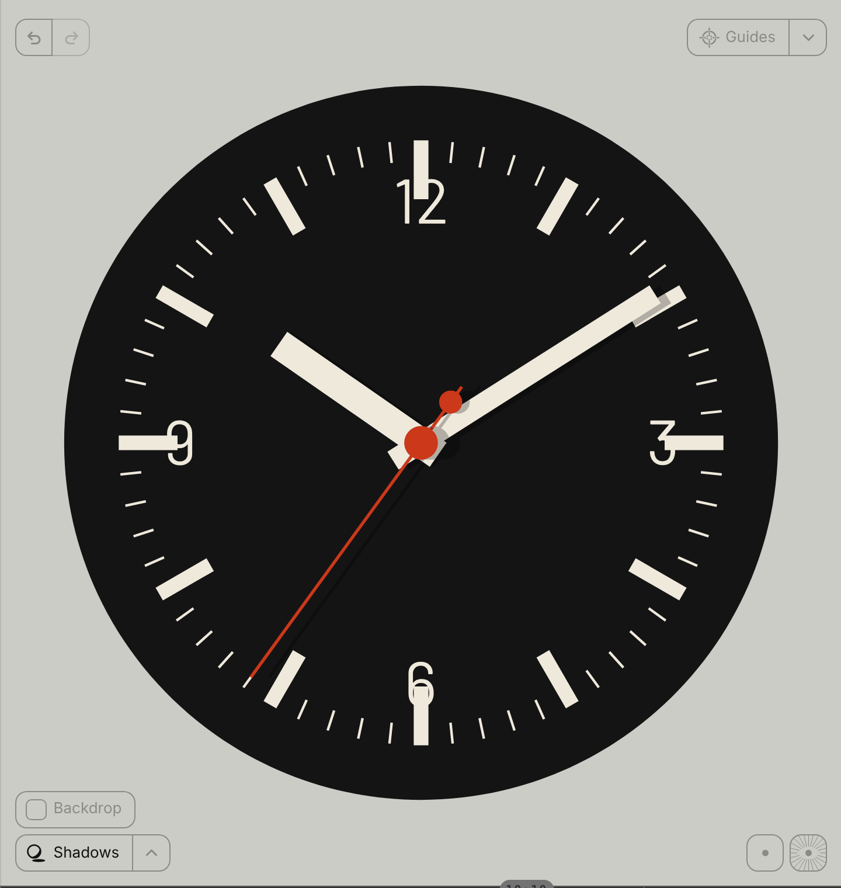
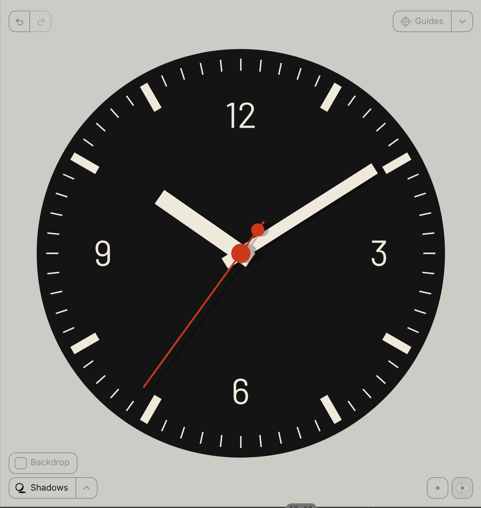
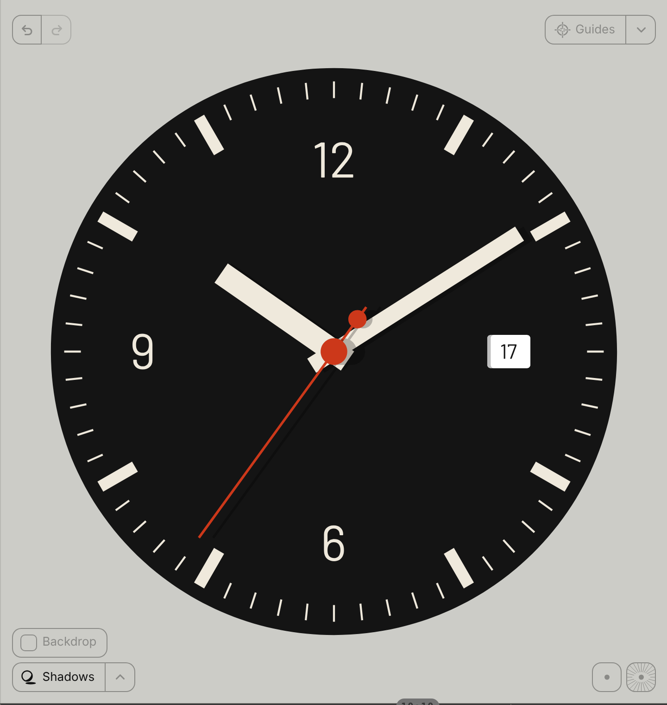
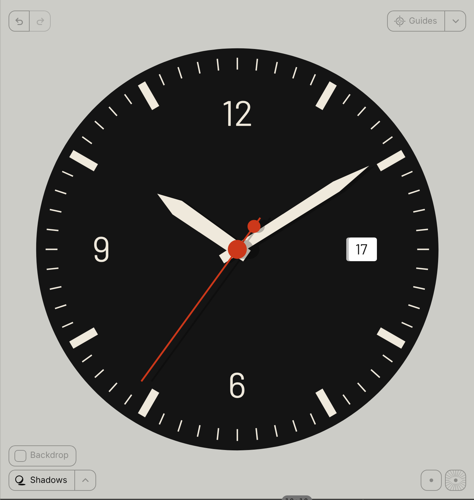
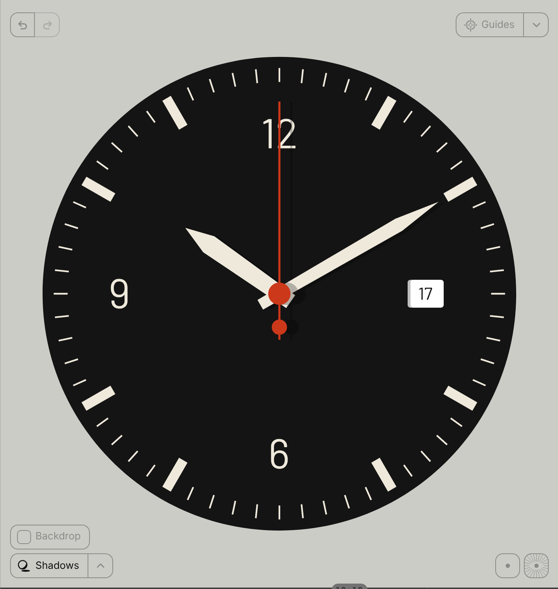
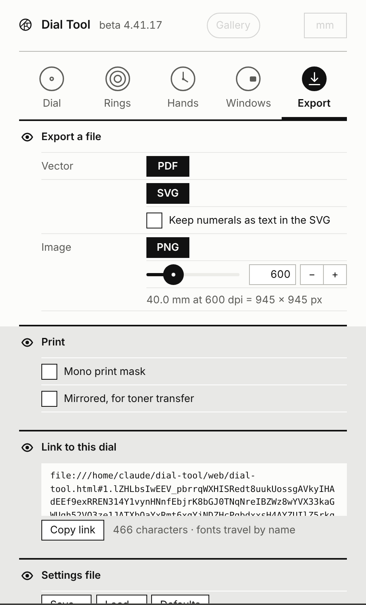

Edition 1, draft · 2026-10-15 · for Dial Tool beta 4.41.17. Pictures from an iPad held landscape.
Five things explain almost everything the tool does. The rest of the guide leans on them.
A watch dial, seen from the side, is a short stack: the date disc at the bottom, the plate with its print, then the hands, then the cap that holds them. The tool draws that stack. The print on the plate is made of rings.
A ring is ticks, markers, numerals or a band, repeated at its positions: Count of them, from Start °, across Span °. Every keeps one position in so many; Skip those instead keeps the others. Every 3 on twelve positions keeps 12, 3, 6, 9; with Skip those instead, the eight hours between.
A dial is a list of rings, top first. A ring below gives way to the rings above in one of two ways, under Rings › Give way to rings above. Skip where leaves out its own marks at the angles where a ring above has one: minute ticks that skip where markers stand. Knock out keeps its marks but cuts them round the rings above, leaving a gap the width of the Clearance.
Select a ring in the list, or tap one of its marks on the dial: everything below the list now edits that ring. The hand tabs in Hands and the window cards in Windows work the same way.
Every length is in millimetres, measured on the dial; files come out at true size. The page around the dial is the diameter plus twice the page margin: a 30 mm dial with a 3 mm margin makes a 36 mm page, and the file is still named after the dial.
There is no Save to press. About half a second after you stop, the dial is kept in this browser and written into the page's address; reload, or come back later in the same browser, and it is there. The address is a link to the dial: send it and the dial opens, at the time shown, but not on the tab or in the unit you were using.
Watch: while time is playing, nothing is kept until you stop it.
The panel on the left, the dial on the right, the bottom bar along the foot. (Pictures from an iPad held landscape; a Mac is the same with more room. The phone is on the next page.)
Dial — its size (and Scale everything with it, which grows the whole print with it), the centre hole, the plate's colour, the page around it, and every colour on the dial in one list. Rings — the list of rings and the settings of the selected one. Hands — hour, minute and seconds hands, and the cap. Windows — up to four holes in the plate; their cards sit at 12, 3, 6 and 9, and each window can move anywhere round the dial. Export — files, the print mask, the link, settings files, the log, and the Gallery.
Each row reads: the eye (show or hide the ring), the grip (drag to reorder), the name, how many of what kind ("12 markers"), its colour, then two numbers: its size and its radius, in millimetres. On the selected row a small text-cursor sign beside the name renames the ring.
Under the selected row sits the ring drawer: four tiles for its kind (ticks, markers, numerals, band) — a ring changed to another kind and back is as it was — then its colour, then two round buttons. Press a round button and its number opens in a small pop-up: on a Mac it is ready to type over; on a touch screen, tap the number first. A tap anywhere else closes it.
| The ring is | First button | Second button |
|---|---|---|
| ticks, markers | Length: of one mark, inward from its outer end | Outer radius: where the marks' outer ends sit |
| numerals | Size: the type size, in mm, as in any layout program (figures stand a little shorter) | Centre radius: where the numerals' centres sit |
| band | Band width | Outer radius |
Watch: a numerals ring's radius can measure to the numerals' centres, their baseline or their tops: the small menu in the radius button's pop-up. Centre is the start.
Top left, undo and redo. Top right, Guides: thin coloured construction lines, on to start, never exported; press Guides to hide them (the pictures in this guide leave them off). Bottom left, Backdrop and Shadows: how the dial is seen, never exported. Bottom right, two square switches: the dial alone (the panel slides away) and the showcase (a dark view for presenting).
Play and its speed, from 1× to 720×. The time, typed or set with the slider under it; its steps are the twelve hours and 10:10, the pose watches are photographed in. Now sets the time it is. On the right: zoom, and FIT to see the whole dial.
A colour opens a pop-out beside it: its × closes it; the square beside the × makes it twice the size. Change… opens the font sheet, which stays open after you choose: tap outside it to close it.
Each section is cut into panes, each with an eye beside its name. Press the eye to fold the pane to one line; a closed eye means folded, and a press opens it again.
The mark opens a note about the tool. Gallery takes you to dials you can open and take apart. mm is the unit numbers are shown and typed in: millimetres, points, inches or lignes (the watchmakers' 2.2558 mm). The dial itself stays in millimetres.
Watch: Gallery and mm are drawn light, but they are live.
The bottom bar moves to the top: the round red button at its left is Play. A tap on it starts time running, and while it runs nothing is kept, so tap it again to stop. The dial sits under the bar, and the panel becomes a drawer below: drag the grey pill on its top line to make it taller or shorter. The title line, with Gallery and mm, shrinks once you scroll. Long ring names are cut short; the row's "12 markers" tells them apart. The switches over the dial show only their signs.
Colour pop-outs close with their ×. The font sheet covers the dial as well as the drawer, so a tap "outside" it can land on a font: close it with a tap on the dark bar at the top.
A black field watch, 34 mm: numerals at 12, 3, 6 and 9, bars at the hours between, minute ticks, a date at 3, sword hands. Each step is a link: open it to see the dial as it should look after that step.
Start from the starting dial. Export › Settings file › Defaults (scroll the panel down to it). It replaces the dial you had; ⌘Z or the undo arrow brings that one back.

Size. Dial › Diameter: type 34.

Colours. Dial › Plate: #141414, a near-black. Then in Colours, set Numerals, Markers, Minute ticks, Hour hand and Minute hand to #EFE9DC, a warm white: tap the colour chip beside each name, then HEX, and type.

A font that ships with the tool. Rings › select Numerals › Type › Change…, choose Barlow, then tap outside the sheet. The starting dial asks for Helvetica Neue; where it isn't installed, the panel says "not loaded" and Inter stands in.
Numerals. With Numerals selected: its radius button, 11.5; its size button, 3. Under Positions, Every: 3. Now only 12, 3, 6 and 9 are left.

Markers and ticks. Select Markers: radius 16.2, length 2.4; Every 3 and Skip those instead, so the bars stand at the eight hours between. Select Minute ticks: radius 16.2. They already skip where markers stand.

The date at 3. Windows › the card at 3 › Show this window. The numeral at 3 gives way to it: a shown window leaves out the numeral and the marker at its position.

Hands. Hands › Hour › shape sword; then Minute › sword. Length runs from the centre to the tip, Tail behind the centre, Width across the blade; Counter Ø is the disc on the seconds hand's tail. The seconds hand and the cap keep the starting red.

The pose. In the bottom bar, the 10:10 step.

A file. Export › PDF. It opens at true size: a 34 mm dial on a 40 mm page. For a file to print from, see For the maker.

I want to start fresh. Export › Settings file › Defaults, or any dial in the Gallery. Either replaces your dial; ⌘Z brings it back. There is no empty dial yet.
Where do colours live? Every colour on the dial is in one list: Dial › Colours, a chip beside each name. A ring's own colour is also in its drawer, a hand's in its pane.
Why did the 3 disappear? A window that is shown takes its place: the numeral and the marker at its position are left out, at any radius. If a minute tick was hidden under that marker, it shows again. There is no way to keep the numeral yet.
Why isn't my window showing? The four windows exist from the start but are hidden: Windows › its card › Show this window. A card says "(not shown)" in its name until then. Width and Height size the hole; Size % sizes the date in it, as a share of the hole's height.
Window at 6, or Window 3? The cards name a window by where it is; the colour list and the file's layers number them in the order they came: Window 1 is the card at 3, then 12, 6 and 9.
I asked for four numerals and got 12, 1, 2, 3. Numerals follow the positions in order. For 12, 3, 6, 9 keep Count at 12 and set Every to 3.
Skip where, or Every? Every chooses a ring's positions by counting, whatever is above it. Skip where leaves out positions where a ring above has a mark, and follows that ring when it changes. Minute ticks under markers: Skip where. Bars between numerals: Every with Skip those instead.
The panel says "not loaded". The font isn't on this device. Inter stands in until you choose one with Change…; the fonts listed there ship with the tool and look the same everywhere.
My time isn't 10:10. The time keeps its seconds. Press the 10:10 step in the bottom bar, or type 10:10:00.
Where did my dial go? It is kept in this browser and in the address. Another browser or device doesn't have it: send yourself the link (Export › Link to this dial › Copy link), or save a settings file (Export › Settings file › Save…).
How do I leave the showcase? Press its switch again, bottom right.
A number field takes sums. Type 1.2 to set, +0.5 to add, x0.5 to multiply, /2 to divide.
The signs without words.
| Sign | Where | What it does |
|---|---|---|
| Eye | each ring's row | shows or hides the ring |
| Grip (six dots) | each ring's row | drag to reorder |
| Text cursor in a box | the selected row | renames the ring |
| + ↑ ↓ ⧉ 🗑 | the ring list's heading | add a ring · move up · move down · duplicate · delete |
| Four tiles | the ring drawer | the ring's kind: ticks, markers, numerals, band |
| Two round buttons | the ring drawer | size · radius: press to type |
| Four small dials | Windows | the windows whose cards sit at 12, 3, 6, 9 |
| Square with rays | over the dial, bottom right | the dial alone |
| Square with a dot | over the dial, bottom right | the showcase |
| Arrows | over the dial, top left | undo · redo |
One page for whoever etches or prints the dial. File facts only; advice on each process waits for a first etch and a shop's questions.
What a file holds. A colour export holds the plate, every ring, the windows with their content, the hands at the time shown, and the cap. Guides, the backdrop and shadows are never in a file. Hide the hands (Hands › Show hands) before exporting a colour file for print: hidden hands are left out.
Size. True size, in millimetres. The page is the diameter plus twice the margin; the file name gives the diameter. A PNG has its dpi written in (Export, the number under PNG), so it opens at true size. The Export log names the size of every file written.
The print mask. Export › Print › Mono print mask: every ring and the windows' frames in black on white, without plate, hands or window content. The edge of each window's hole and the centre hole are 0.05 mm cut lines. The dial on screen shows the mask while it is on.
Mirrored, for toner transfer only. It flips the file left to right. Never send a mirrored file to a pad or screen printer.
Watch: marks lying on a band disappear in the mask, black on black, unless the band knocks them out (Rings › Give way to rings above › Knock out).
Watch: the cut lines are in the same black as the marks. Delete the layers "Window 1 cut line" and "Hole" from the PDF or SVG before printing a resist; the PNG has them baked in. Without "Hole" there is no centre mark, and there are no registration marks yet.
One film per ink. Export one PDF with everything shown and use its layers: one per ring, named as in the list. Don't hide rings and export again: a ring only knocks out round rings that are shown.
Colour. Colours are plain RGB values, with no colour profile. Give the printer the hex codes from Dial › Colours and a physical colour reference.
Text. Numerals and dates are outlines in every file. Export › "Keep numerals as text in the SVG" writes them as text in the SVG only; the font must then be installed where the file is opened.
The thinnest line. For ticks and markers it is in the ring's settings, in its Shape pane: Width, and Inner width × if the marks taper. Numerals have no width setting: zoom into the PDF and measure the thinnest stroke. The tool doesn't report it yet.
Process advice (minimum line, clearance, ink order): pending a first etch and a shop's questions.